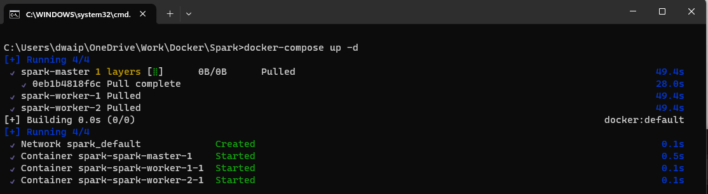
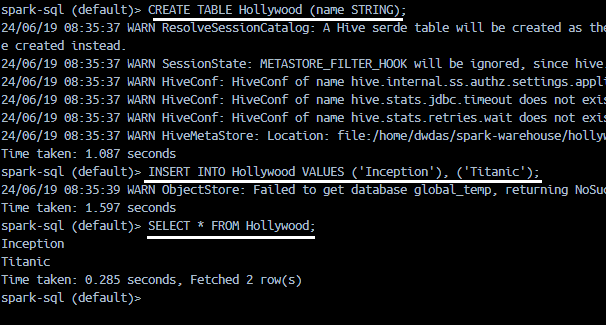

- Create a Spark cluster using Bitnami Spark Image
- Follow just three steps below to create the setup
- Dockerfile and docker-compose
- Dockerfile
- docker-compose.yml
- How to add an extra node to the cluster
- Configuration Reference
- Bitnami Spark Reference
- Bitnami Spark Cluster with Shared Volume
- Steps to create the environment
- Common Errors
Create a Spark cluster using Bitnami Spark Image¶
Here I will show you how you can setup a Spark Cluster, 1 master, 2 workers node. We will use the Bitnami Docker image for this. This cluster works wonderfully and the easiest of all setups.
Make sure Docker is installed and running on your machine. You can Download Docker Desktop for windows from here.
Follow just three steps below to create the setup¶
- Create a file docker-compose.yml with the content from the docker-compose section.
- Create a file Dockerfile, with the content from Dockerfile. Note Dockerfile has NO extension.
-
Now open Command prompt and run the following commands
docker network create dasnet docker-compose -p bitnami-spark-cluster build docker-compose -p bitnami-spark-cluster up -d -
Open the Docker app and navigate to the container section. The containers should be up and running.

{kind=link}
Dockerfile and docker-compose¶
Dockerfile¶
Save the content below in file, Dockerfile(no extension)
# Use the official Bitnami Spark image as the base image
# To use the latest version just replace the line below with FROM bitnami/spark:latest
FROM bitnami/spark:3.5
# Switch to root user to install necessary packages and set permissions
USER root
# Install sudo package
RUN apt-get update && apt-get install -y sudo
# Add a non-root user named dwdas with a home directory and bash shell
RUN useradd -ms /bin/bash dwdas
# Set the password for dwdas as Passw0rd
RUN echo "dwdas:Passw0rd" | chpasswd
# Add the user to the sudo group and configure sudoers file to allow passwordless sudo
RUN adduser dwdas sudo
RUN echo "dwdas ALL=(ALL) NOPASSWD:ALL" >> /etc/sudoers
# Ensure dwdas has write permissions to necessary directories and files
RUN mkdir -p /opt/bitnami/spark/tmp && chown -R dwdas:dwdas /opt/bitnami/spark/tmp
RUN chown -R dwdas:dwdas /opt/bitnami/spark/conf
RUN chown -R dwdas:dwdas /opt/bitnami/spark/work
RUN chown -R dwdas:dwdas /opt/bitnami/spark/logs
# Switch back to the non-root user
USER dwdas
# Set the working directory
WORKDIR /home/dwdas
docker-compose.yml¶
Here is the content for the docker-compose.yml file. Simply copy the contents into a file named docker-compose.yml in your folder.
version: '3.9' # Specify the version of Docker Compose syntax. Latest is 3.9 on Aug 2024
services: # Define the services (containers) that make up your application
master:
build:
context: . # Build context is the current directory (where the Dockerfile is located)
dockerfile: Dockerfile # Dockerfile to use for building the image
image: bitnami-spark-master # Name the image for the master node
container_name: master # Set a custom name for the master container
environment:
- SPARK_MODE=master # Environment variable to set the Spark mode to master
- SPARK_RPC_AUTHENTICATION_ENABLED=no
- SPARK_RPC_ENCRYPTION_ENABLED=no
- SPARK_LOCAL_STORAGE_ENCRYPTION_ENABLED=no
- SPARK_SSL_ENABLED=no
- SPARK_USER=spark
ports:
# Mapping ports: <Host_Port>:<Container_Port>
# Use rare ports on the host to avoid conflicts, while using standard ports inside the container
- "16080:8080" # Map a rare port on the host (16080) to the standard port 8080 on the container for Spark Master web UI
- "17077:7077" # Map a rare port on the host (17077) to the standard port 7077 on the container for Spark Master communication
volumes:
- spark-warehouse:/user/hive/warehouse # Mount the shared volume for Hive warehouse
networks:
- dasnet # Connect the master container to the defined network
worker1:
build:
context: . # Build context is the current directory (where the Dockerfile is located)
dockerfile: Dockerfile # Dockerfile to use for building the image
image: bitnami-spark-worker # Name the image for the worker node
container_name: worker1 # Set a custom name for the first worker container
environment:
- SPARK_MODE=worker # Environment variable to set the Spark mode to worker
- SPARK_MASTER_URL=spark://master:7077 # URL for the worker to connect to the master, using the standard port 7077
- SPARK_WORKER_MEMORY=2G # Set the memory allocated for the worker
- SPARK_WORKER_CORES=2 # Set the number of CPU cores allocated for the worker
- SPARK_RPC_AUTHENTICATION_ENABLED=no
- SPARK_RPC_ENCRYPTION_ENABLED=no
- SPARK_LOCAL_STORAGE_ENCRYPTION_ENABLED=no
- SPARK_SSL_ENABLED=no
- SPARK_USER=spark
depends_on:
- master # Ensure that the master service is started before this worker
ports:
# Mapping ports: <Host_Port>:<Container_Port>
- "16002:8081" # Map a rare port on the host (16002) to the standard port 8081 on the container for Spark Worker 1 web UI
volumes:
- spark-warehouse:/user/hive/warehouse # Mount the shared volume for Hive warehouse
networks:
- dasnet # Connect the worker container to the defined network
worker2:
build:
context: . # Build context is the current directory (where the Dockerfile is located)
dockerfile: Dockerfile # Dockerfile to use for building the image
image: bitnami-spark-worker # Name the image for the worker node
container_name: worker2 # Set a custom name for the second worker container
environment:
- SPARK_MODE=worker # Environment variable to set the Spark mode to worker
- SPARK_MASTER_URL=spark://master:7077 # URL for the worker to connect to the master, using the standard port 7077
- SPARK_WORKER_MEMORY=2G # Set the memory allocated for the worker
- SPARK_WORKER_CORES=2 # Set the number of CPU cores allocated for the worker
- SPARK_RPC_AUTHENTICATION_ENABLED=no
- SPARK_RPC_ENCRYPTION_ENABLED=no
- SPARK_LOCAL_STORAGE_ENCRYPTION_ENABLED=no
- SPARK_SSL_ENABLED=no
- SPARK_USER=spark
depends_on:
- master # Ensure that the master service is started before this worker
ports:
# Mapping ports: <Host_Port>:<Container_Port>
- "16004:8082" # Map a rare port on the host (16004) to a different standard port 8082 on the container for Spark Worker 2 web UI
volumes:
- spark-warehouse:/user/hive/warehouse # Mount the shared volume for Hive warehouse
networks:
- dasnet # Connect the worker container to the defined network
volumes:
spark-warehouse:
driver: local # Use the local driver to create a shared volume for the warehouse
networks:
dasnet:
external: true # Use the existing 'dasnet' network, created externally via 'docker network create dasnet'
How to add an extra node to the cluster¶
To add an extra node just copy paste the contents worker2 and replace the values like `container_name: worker3` `ports: 16005:8083` etc.
Configuration Reference¶
| Configuration Item | Value |
|---|---|
| Base Image | bitnami/spark:3.5 |
| Spark Version | 3.5.2 |
| Python Version | 3.12 |
| Java Version | OpenJDK 17.0.12 |
| Environment Variables | SPARK_MODE, SPARK_USER, SPARK_MASTER_URL, SPARK_WORKER_MEMORY, SPARK_WORKER_CORES, SPARK_RPC_AUTHENTICATION_ENABLED=no, SPARK_RPC_ENCRYPTION_ENABLED=no, SPARK_LOCAL_STORAGE_ENCRYPTION_ENABLED=no, SPARK_SSL_ENABLED=no |
| Java Home | /opt/bitnami/java |
| Spark Home | /opt/bitnami/spark |
| Python Path | /opt/bitnami/spark/python/ |
| Pyspark Installation Location | /opt/bitnami/spark/python/pyspark |
| Users | dwdas with sudo privileges, spark (default user) |
| User Directory | /home/dwdas |
| Ports | Master: 16080:8080 (Web UI), 17077:7077 (RPC); Workers: 16002:8081 (Web UI worker1), 16004:8082 (Web UI worker2) Master http://localhost:16080/, Worker1 http://localhost:16002/, Worker2 http://localhost:16004/ |
| Volumes | /opt/bitnami/spark/tmp, /opt/bitnami/spark/conf, /opt/bitnami/spark/work, /opt/bitnami/spark/logs, spark-warehouse:/user/hive/warehouse |
| Network Configuration | Custom Docker network dasnet |
| Entry Point | /opt/bitnami/scripts/spark/entrypoint.sh |
| CMD | /opt/bitnami/scripts/spark/run.sh |
| Spark Web UI Ports | Master: 8080, Worker 1: 8081, Worker 2: 8082 |
| Spark RPC Port | 7077 (mapped to 17077 on host) |
| Spark SSL Configuration | SPARK_SSL_ENABLED=no |
| Spark Authentication | SPARK_RPC_AUTHENTICATION_ENABLED=no |
| Spark Configuration Files | /opt/bitnami/spark/conf |
| spark-sql CLI | Just use spark-sql. Location: /opt/bitnami/spark/bin/spark-sql |
| spark-shell CLI | Just use spark-shell. Location: /opt/bitnami/spark/bin/spark-shell |
Bitnami Spark Reference¶
You can check out the home directory for the Bitnami Spark Container here. It has all the documentation, configuration files, and version details you might need. If you want to see how the base image is built, you can look at their Dockerfile.
Bitnami makes sure to keep up with any changes from the source and quickly rolls out new versions using their automated systems. This means you get the latest fixes and features without any delay. Whether you're using containers, virtual machines, or cloud images, Bitnami keeps everything consistent, making it easy to switch formats based on what your project needs.
All Bitnami images are based on minideb, which is a lightweight Debian-based container image, or scratch, which is an empty image—so you get a small base that’s easy to work with.
These containers are set up as non-root by default, but I’ve added myself as a root user.
Bitnami Spark Cluster with Shared Volume¶
Here, I will show you how to set up a Spark Cluster with the following Details:
| Configuration Detail | Value |
|---|---|
| Image | bitnami/spark:latest (Spark 3.5.1), OS_FLAVOUR=debian-12 |
| Spark Mode | 1 Master + 2 Workers |
| Spark Submission URL | spark://spark-master:7077 |
| Spark URLs Local | Master http://localhost:8080/, Worker 1 http://localhost:8081/, Worker 2 http://localhost:8082/ |
| Spark Worker Specs | Memory 2G, Cores 2 |
| Common Mounted Volumes | spark-warehouse:/user/hive/warehouse to all nodes |
| Mounted Folder Details | Temp Dir: /opt/bitnami/spark/tmp, Spark Conf: /opt/bitnami/spark/conf, /opt/bitnami/spark/work, Logs Dir: /opt/bitnami/spark/logs |
| Networks | spark-network (bridge network) |
| User | dwdas (Password: Passw0rd, Sudo Privileges: NOPASSWD:ALL), Working dir: /home/dwdas |
| Java Version | OpenJDK 17.0.11 (LTS) |
| Python Version | Python 3.11.9 |
| JAVA_HOME | /opt/bitnami/java |
| SPARK_HOME | /opt/bitnami/spark |
| PYTHONPATH | /opt/bitnami/spark/python/ |
| spark-sql CLI | Just use spark-sql. Location: /opt/bitnami/spark/bin/spark-sql |
| spark-shell CLI | Just use spark-shell. Location: /opt/bitnami/spark/bin/spark-shell |
Steps to create the environment¶
Create the Dockerfile¶
Create a Dockerfile.txt with the contents below(remove .txt later).
# Use the official Bitnami Spark image as the base image
FROM bitnami/spark:latest
# Switch to root user to install necessary packages and set permissions
USER root
# Install sudo package
RUN apt-get update && apt-get install -y sudo
# Add a non-root user named dwdas with a home directory and bash shell
RUN useradd -ms /bin/bash dwdas
# Set the password for dwdas as Passw0rd
RUN echo "dwdas:Passw0rd" | chpasswd
# Add the user to the sudo group and configure sudoers file to allow passwordless sudo
RUN adduser dwdas sudo
RUN echo "dwdas ALL=(ALL) NOPASSWD:ALL" >> /etc/sudoers
# Ensure dwdas has write permissions to necessary directories and files
RUN mkdir -p /opt/bitnami/spark/tmp && chown -R dwdas:dwdas /opt/bitnami/spark/tmp
RUN chown -R dwdas:dwdas /opt/bitnami/spark/conf
RUN chown -R dwdas:dwdas /opt/bitnami/spark/work
RUN chown -R dwdas:dwdas /opt/bitnami/spark/logs
# Switch back to the non-root user
USER dwdas
# Set the working directory
WORKDIR /home/dwdas
Create the docker-compose.yml file¶
In the same folder, create a docker-compose.yml with the content below.
version: '3' # Specify the version of Docker Compose syntax
services: # Define the services (containers) that make up your application
spark-master:
build:
context: . # Build context is the current directory (where the Dockerfile is located)
dockerfile: Dockerfile # Dockerfile to use for building the image
image: bitnami-spark-master # Name the image for the master node
container_name: spark-master # Set a custom name for the master container
environment:
- SPARK_MODE=master # Environment variable to set the Spark mode to master
ports:
- "8080:8080" # Map port 8080 on the host to port 8080 on the container for Spark Master web UI
- "7077:7077" # Map port 7077 on the host to port 7077 on the container for Spark Master
volumes:
- spark-warehouse:/user/hive/warehouse # Mount the shared volume for Hive warehouse
networks:
- spark-network # Connect the master container to the defined network
spark-worker-1:
build:
context: . # Build context is the current directory (where the Dockerfile is located)
dockerfile: Dockerfile # Dockerfile to use for building the image
image: bitnami-spark-worker # Name the image for the worker node
container_name: spark-worker-1 # Set a custom name for the first worker container
environment:
- SPARK_MODE=worker # Environment variable to set the Spark mode to worker
- SPARK_MASTER_URL=spark://spark-master:7077 # URL for the worker to connect to the master
- SPARK_WORKER_MEMORY=2G # Set the memory allocated for the worker
- SPARK_WORKER_CORES=2 # Set the number of CPU cores allocated for the worker
depends_on:
- spark-master # Ensure that the master service is started before this worker
ports:
- "8081:8081" # Map port 8081 on the host to port 8081 on the container for Spark Worker 1 web UI
volumes:
- spark-warehouse:/user/hive/warehouse # Mount the shared volume for Hive warehouse
networks:
- spark-network # Connect the worker container to the defined network
spark-worker-2:
build:
context: . # Build context is the current directory (where the Dockerfile is located)
dockerfile: Dockerfile # Dockerfile to use for building the image
image: bitnami-spark-worker # Name the image for the worker node
container_name: spark-worker-2 # Set a custom name for the second worker container
environment:
- SPARK_MODE=worker # Environment variable to set the Spark mode to worker
- SPARK_MASTER_URL=spark://spark-master:7077 # URL for the worker to connect to the master
- SPARK_WORKER_MEMORY=2G # Set the memory allocated for the worker
- SPARK_WORKER_CORES=2 # Set the number of CPU cores allocated for the worker
depends_on:
- spark-master # Ensure that the master service is started before this worker
ports:
- "8082:8081" # Map port 8082 on the host to port 8081 on the container for Spark Worker 2 web UI
volumes:
- spark-warehouse:/user/hive/warehouse # Mount the shared volume for Hive warehouse
networks:
- spark-network # Connect the worker container to the defined network
volumes:
spark-warehouse:
driver: local # Use the local driver to create a shared volume for the warehouse
networks:
spark-network:
driver: bridge # Use the bridge driver to create an isolated network for the Spark cluster
Build Your Docker Images¶
In command prompt run the following command to build your Docker images

There will be two images: One for the Master and the other for the worker nodes. The images section will also show one dangling image. Ignore it.
{kind=link}
Run the containers using the images¶
Now run the following:
You should see three containers running inside a compose stack.
{kind=link}
And a volume will be created and shown in teh Volumes section:
{kind=link}
The volume will be mounted to all the three containers:

Check Permissions for /user/hive/warehouse¶
The /user/hive/warehouse folder is the mounted directory we created. The user dwdas should have the correct permissions for this folder in all three containers. To check this, connect to each container through the terminal using either:
Or through Docker Desktop's EXEC tab.
Then run:
{kind=link}
Note: If you don't have rwx or owner permissions for the warehouse folder and see an output like this:

You will need to either provide rwx permission for dwdas or make dwdas the owner of the folder:
If that doesn't work, you can use:
Connect to SparkSQL using spark-sql CLI¶
Open any container's terminal(Master/worker) and input spark-sql.
{kind=link}
Let's create a simple table and see query it. paste the following in the terminal:
CREATE TABLE Hollywood (name STRING);
INSERT INTO Hollywood VALUES ('Inception'), ('Titanic');
SELECT * FROM Hollywood;
A table will be created in SPARK as extended tabble and you will be able to see the select result: 
Will give this result:{kind=link}

Note: its a manged table in location /home/dwdas/spark-warehouse/
Connect to a container and create a spark session¶
Open VS Code and use Dev Containers to attach to the running Master container. Then, open a Jupyter notebook and run the following commands.
To know how to connect VS code to a container, refer to my article here.
from pyspark.sql import SparkSession
# Initialize the SparkSession
## Note: file:///user/hive/warehouse is the way and not /user/hive/warehouse. Add file: Else, wont be able to find the directory
spark = SparkSession.builder \
.appName("HiveExample") \
.config("spark.sql.warehouse.dir", "file:///user/hive/warehouse") \
.config("spark.sql.legacy.createHiveTableByDefault", "false") \
.enableHiveSupport() \
.getOrCreate()
# Explanation:
# - `spark.sql.warehouse.dir`: Specifies the default location for managed databases and tables.
# - `spark.sql.legacy.createHiveTableByDefault`: Ensures that Hive tables are not created by default unless explicitly specified.
# - `enableHiveSupport()`: Enables Hive support, allowing Spark to leverage Hive Metastore, run HiveQL queries, and use Hive functions.
# Sample data
data = [("Kim Jong Obama", 28), ("Vladimir Trump", 35)]
columns = ["Name", "Age"]
# Create a DataFrame
df = spark.createDataFrame(data, columns)
# Save the DataFrame as a managed table
df.write.mode("overwrite").saveAsTable("people")
# Verify the table creation
spark.sql("SELECT * FROM people").show()
# Additional Information:
# - Hive Metastore Integration: Spark can directly access the Hive Metastore, providing a unified metadata layer for Spark and Hive.
# - HiveQL Queries: You can run HiveQL queries using Spark SQL, using the familiar Hive syntax.
# - Hive Functions: Spark supports Hive's built-in functions in Spark SQL queries.
# - Table Management: Spark can read from and write to Hive-managed tables, including creating, dropping, and altering tables.
# - Compatibility with Hive Data Formats: Spark can read from and write to Hive's data formats like ORC and Parquet.
# - Access to Hive UDFs: User-defined functions created in Hive can be used within Spark SQL queries.

Common Errors¶
I will update this section when I get time.